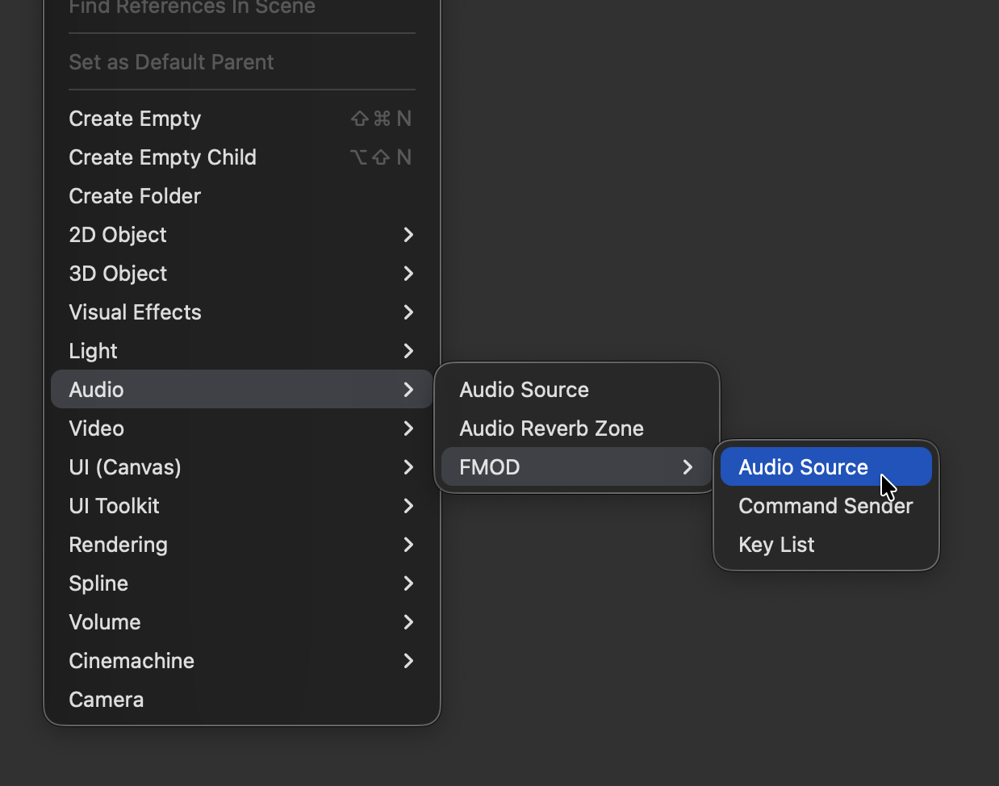
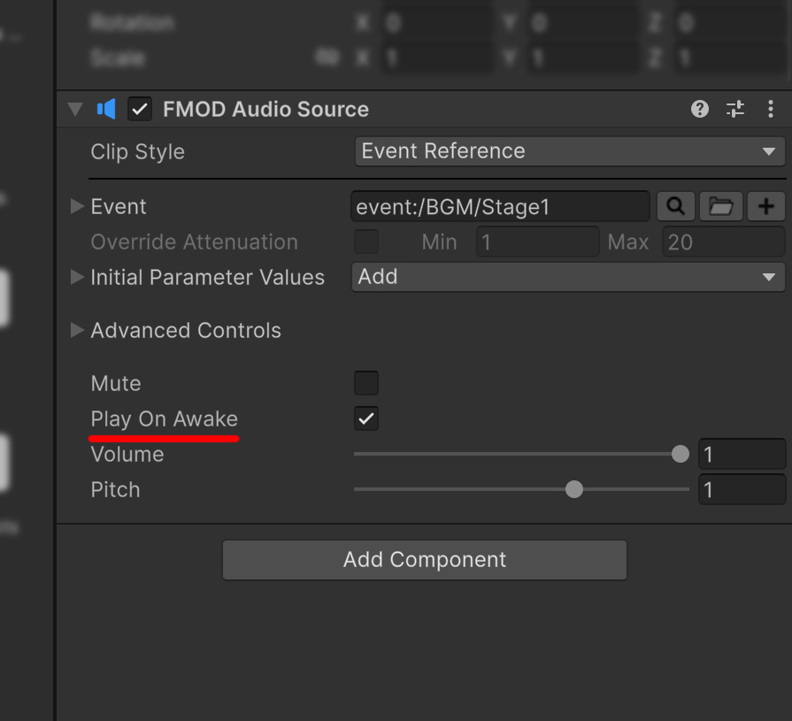

시작하기
1. 설치 확인
FMOD > FMOD Plus > Setup을 열어 지원되는 FMOD for Unity 패키지가 활성화됐는지 확인합니다. FMOD Plus 컴포넌트를 추가하기 전에 Console의 첫 번째 컴파일 오류부터 해결하세요.
2. 리스너 설정 확인
Camera에 Unity 기본 Audio Listener가 아닌 FMOD Studio Listener 컴포넌트가 연결되어 있는지 확인합니다. Unity Audio Listener 컴포넌트를 우클릭하고 Change FMOD Studio Listener를 선택하면 간편하게 교체할 수 있습니다.

3. Audio Source 만들기
- GameObject > Audio > FMOD > Audio Source를 선택합니다.
FMODAudioSource컴포넌트가 연결된 GameObject가 생성됩니다.

- 생성된 GameObject를 선택하고 Inspector에서
FMODAudioSource컴포넌트를 찾습니다. - Clip Style을 Event Reference로 설정합니다.

- Event에서 재생할 FMOD Event를 선택합니다.

- Play On Awake를 활성화합니다.

- Play Mode로 진입합니다. GameObject가 활성화될 때 선택한 Event가 자동으로 재생됩니다.

소리가 들리지 않으면 FMOD Bank가 준비되어 있는지 확인하고, 2번에서 Camera에 설정한 FMOD Studio Listener를 다시 확인하세요.